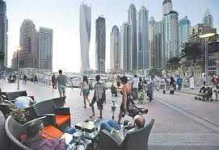

Etymology and usage
The word country comes from Old French contrée, which derives from Vulgar Latin (terra) contrata ("(land) lying opposite"; "(land) spread before"), derived from contra ("against, opposite"). It most likely entered the English language after the Franco-Norman invasion during the 11th century.
In English the word has increasingly become associated with political divisions, so that one sense, associated with the indefinite article – "a country" – through misuse and subsequent conflation is now a synonym for state, or a former sovereign state, in the sense of sovereign territory or "district, native land".[4] Examples of these in North America include Navajo Country, Shuswap Country, Okanagan Country, Blackfoot Country, Inuit Country, the Comanche Country or Comanchería, and the Delaware Country or Lenapehoking. Areas much smaller than a political state may be called by names such as the West Country in England, the Black Country (a heavily industrialised part of England), "Constable Country" (a part of East Anglia painted by John Constable), the "big country" (used in various contexts of the American West), "coal country" (used of parts of the US and elsewhere) and many other terms.[4]
The equivalent terms in various Romance languages (e.g. the French pays) have not carried the process of being identified with sovereign political states as far as the English country. These terms are derived from the Roman term pagus, which continued to be used in the Middle Ages for small geographical areas similar to the size of English counties. In many European countries, the words are used for sub-divisions of the national territory, as in the German Bundesländer, as well as a less formal term for a sovereign state. France has very many "pays" that are officially recognised at some level and are either natural regions, like the Pays de Bray, or reflect old political or economic entities, like the Pays de la Loire.
A version of "country" can be found in modern French as contrée, derived from the Old French word cuntrée,[4] that is used similarly to the word pays to define non-state regions, but can also be used to describe a political state in some particular cases. The modern Italian contrada is a word with its meaning varying locally, but usually meaning a ward or similar small division of a town, or a village or hamlet in the countryside.The word country comes from Old French contrée, which derives from Vulgar Latin (terra) contrata ("(land) lying opposite"; "(land) spread before"), derived from contra ("against, opposite"). It most likely entered the English language after the Franco-Norman invasion during the 11th century.
In English the word has increasingly become associated with political divisions, so that one sense, associated with the indefinite article – "a country" – through misuse and subsequent conflation is now a synonym for state, or a former sovereign state, in the sense of sovereign territory or "district, native land".[4] Examples of these in North America include Navajo Country, Shuswap Country, Okanagan Country, Blackfoot Country, Inuit Country, the Comanche Country or Comanchería, and the Delaware Country or Lenapehoking. Areas much smaller than a political state may be called by names such as the West Country in England, the Black Country (a heavily industrialised part of England), "Constable Country" (a part of East Anglia painted by John Constable), the "big country" (used in various contexts of the American West), "coal country" (used of parts of the US and elsewhere) and many other terms.[4]
The equivalent terms in various Romance languages (e.g. the French pays) have not carried the process of being identified with sovereign political states as far as the English country. These terms are derived from the Roman term pagus, which continued to be used in the Middle Ages for small geographical areas similar to the size of English counties. In many European countries, the words are used for sub-divisions of the national territory, as in the German Bundesländer, as well as a less formal term for a sovereign state. France has very many "pays" that are officially recognised at some level and are either natural regions, like the Pays de Bray, or reflect old political or economic entities, like the Pays de la Loire.
A version of "country" can be found in modern French as contrée, derived from the Old French word cuntrée,[4] that is used similarly to the word pays to define non-state regions, but can also be used to describe a political state in some particular cases. The modern Italian contrada is a word with its meaning varying locally, but usually meaning a ward or similar small division of a town, or a village or hamlet in the countryside.
Sovereignty status
Main article: List of sovereign states
The term "country" can refer to a sovereign state. There is no universal agreement on the number of "countries" in the world since a number of states have disputed sovereignty status. By one application of the declarative theory of statehood and constitutive theory of statehood,[9] there are 206 sovereign states; of which 193 are members of the UN, two have observer status at the United Nations General Assembly (UNGA) (the Holy See and Palestine), and 11 others are neither a member nor observer at the UNGA.
The degree of autonomy of non-sovereign countries varies widely. Some are possessions of sovereign states, as several states have overseas territories (such as French Polynesia, or the British Virgin Islands), with citizenry at times identical and at times distinct from their own. Such territories, with the exception of distinct dependent territories,[clarify] are usually listed together with sovereign states on lists of countries, but may nonetheless be treated as a separate "country of origin" in international trade, as Hong Kong is.[10][11][12]
A few states consist of a union of smaller polities which are considered countries:
.France includes French Polynesia, which has the sui generis status of pays d'outre-mer (overseas country), among the rest of les Outre-mer .
.The Kingdom of the Netherlands includes four separate constituent countries (Dutch: landen): Netherlands, Aruba, Curaçao, and Sint Maarten.
.The United Kingdom includes the four countries England, Northern Ireland, Scotland and Wales. The Crown Dependencies and the Overseas Territories, which are not part of the UK itself, are also considered countries
The United Nations and The World Bank
The United Nations Department of Economic and Social Affairs annually produces the World Economic Situation and Prospects Report classifies states as developed countries, economies in transition, or developing countries. The report classifies country development based on per capita gross national income (GNI). The UN identifies subgroups within the broad categories based on geographical location or ad hoc criteria. The UN outlines the geographical regions for developing economies like Africa, East Asia, South Asia, Western Asia, Latin America and the Caribbean. The 2019 report recognises only developed countries in North America, Europe, Asia, and the Pacific. The majority of economies in transition and developing countries are found in Africa, Asia, Latin America and the Caribbean.
The UN additionally recognises multiple trends that impact the developmental status of countries in the World Economic Situation and Prospects. The report highlights fuel-exporting and fuel-importing countries, small island developing states, and landlocked developing countries. It also identifies heavily indebted developing countries.[15]
The newest United Nations (UN) member is South Sudan.
The World Bank also classifies countries based on GNI per capita. The World Bank Atlas method classifies countries as low-income economies, lower-middle-income economies, upper-middle-income economies, or high-income economies. For the 2020 fiscal year, the World Bank defines low-income economies as countries with a GNI per capita of $1,025 or less in 2018; lower-middle-income economies as countries with a GNI per capita between $1,026 and $3,995; upper-middle-income economies as countries with a GNI per capita between $3,996 and $12,375; high-income economies as countries with a GNI per capita of $12,376 or more.[18]
It also identifies regional trends. The World Bank defines its regions as East Asia and Pacific, Europe and Central Asia, Latin America and the Caribbean, Middle East and North Africa, North America, South Asia, and Sub-Saharan Africa. Lastly, the World Bank distinguishes countries based on the operational policies of the World Bank. The three categories include International Development Association (IDA) countries, International Bank for Reconstruction and Development (IBRD) countries, and Blend countries.
